One chromatic notation built from start to finish in the Chromatic Notation Configurator, from a notehead drawn in Inkscape to a LilyPond file that engraves music in it. It follows the Configurator's twelve steps in order, with a picture of each.
You will build Tutorial 3-5-7-9: four staff lines in each octave, on D♯ (E♭), F, G and A, two semitones apart, with a gap of six semitones from A to the next D♯; diamond noteheads two semitones tall and three wide, red on C♯, D♯, F♯, G♯ and A♯ and black on the rest, hollow for minims; a key signature of noteheads in Clairnote's stacks; and a C clef of your own. This is the finished notation:
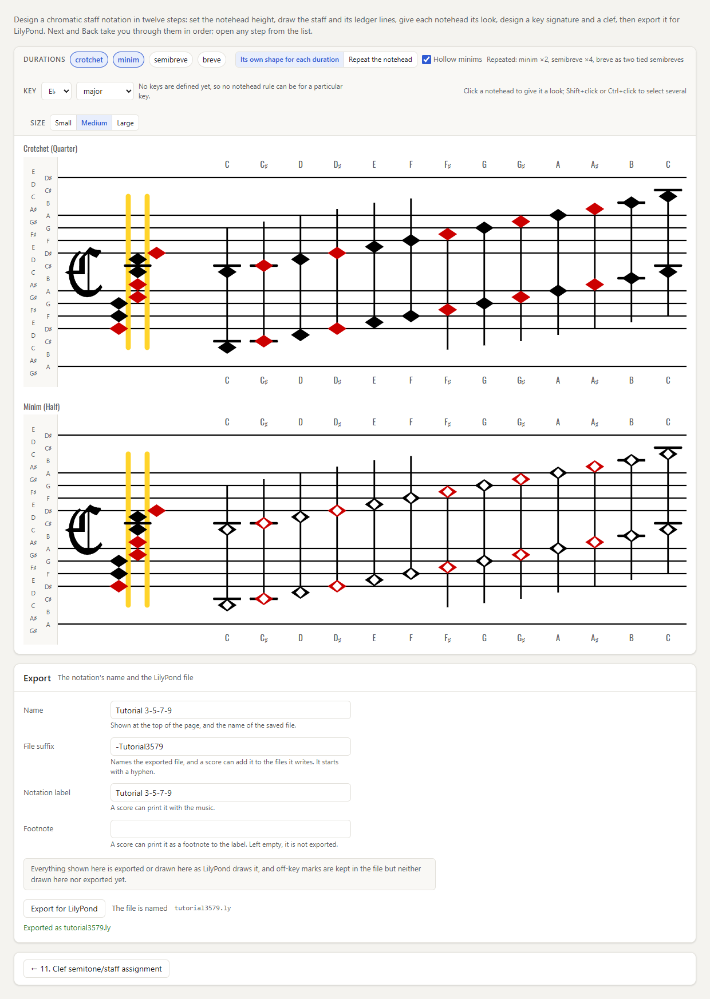
music_glyph_toolkit.inx and
music_glyph_toolkit.py into Inkscape's user extensions
folder (Edit › Preferences › System › User extensions names it) and
restart Inkscape. It is under Extensions › Music Typography › Music
Glyph Toolkit….The notehead is a diamond, 2 semitones tall and 3 wide, with a hollow for its minims. You draw it once in Inkscape, at any size, and the Music Glyph Toolkit gives it its height, centres it and adds its stems. The file you save is the one you import in step 5.
A notehead is two filled shapes: the head, and the hollow, a smaller shape inside it that minims show as white. Draw both upright and centred on each other, where they are easy to line up. Then group them and turn or stretch the group, so the hollow keeps its place inside the head.
For a traditional, slanted notehead, start from flat ovals: an ellipse for the head and a flatter one inside it for the hollow (a rounded rectangle also serves for the hollow). Centre one on the other, group them, rotate the group about 20° anticlockwise, and ungroup it. The diamond below is the same recipe with squares.
notehead, then the hollow
and set its ID to hollow, pressing Set after each.stem-up at the right point and
stem-down at the left, with dashed semitone guidelines in
their own layer.diamond.svg (File › Save As…,
Inkscape SVG or Plain SVG).A notehead sits on its pitch by its reference point: the point placed at the pitch's height. It belongs on the head's visual centre. For a symmetric shape like the diamond that is its middle, where the toolkit already centred it, which is the default: there is nothing to set. For a lopsided shape (a teardrop, or a head heavier on one side) it is the centre of mass, where the eye puts the note.
You pick it in step 5, after the import, by clicking on the enlarged shape (Pick the point that sits on the pitch, then Done). The head moves; the staff lines stay where they are.
How tall every notehead is. It comes first because the staff, the ledger lines and each notehead's own size are judged against it.
Set Height to 2 semitones. The diamond will be one staff space of the staff you draw next. The default noteheads shrink on the canvas; each keeps its shape's proportions.
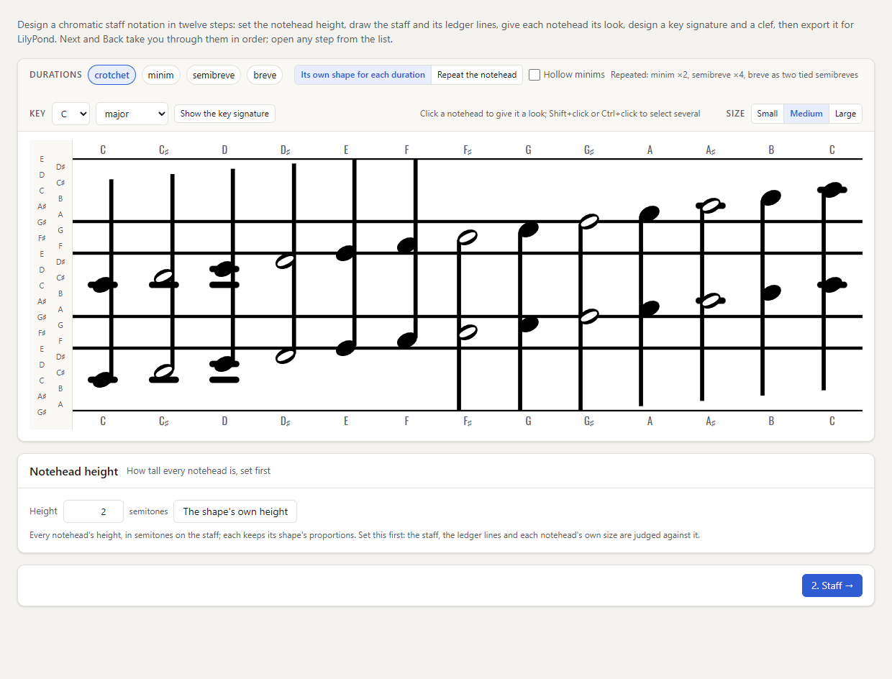
Where the staff lines are, within each octave.
Under Staff lines on, click D♯, F, G and A to add them, then E and G♯ to take the default's lines away. The staff now has four lines an octave, on semitones 3, 5, 7 and 9: two semitones a staff space, and a gap of three staff spaces from A up to the next D♯, which the ledger lines of step 4 fill. The panel confirms the spacing and that the middle of the staff is still C, semitone 12.
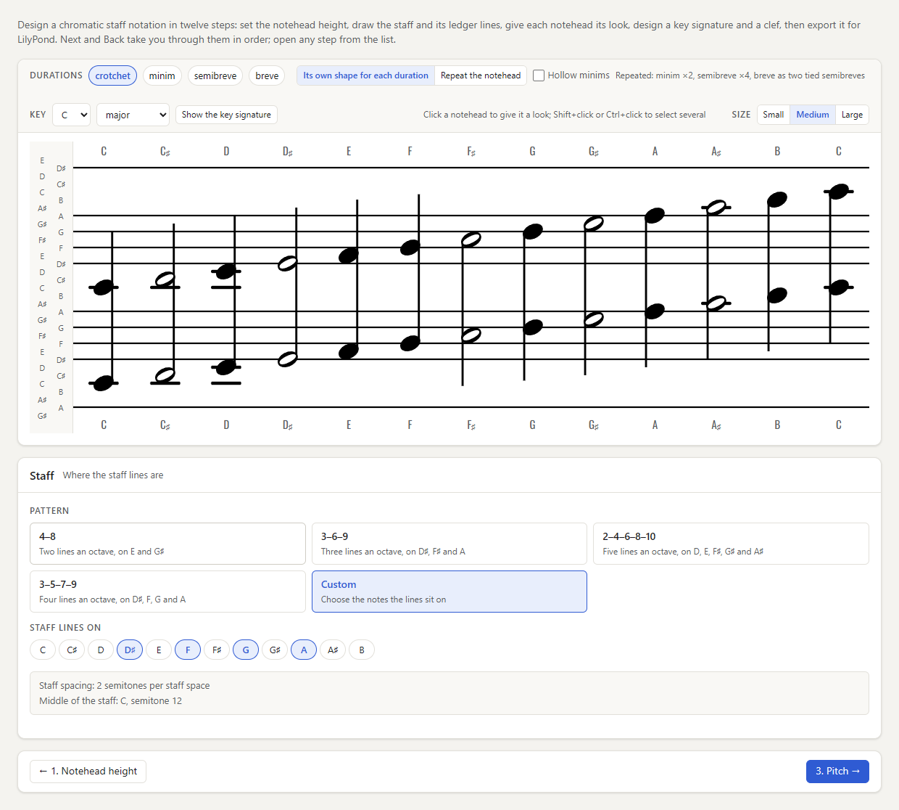
Which note sits in the middle of the staff, and the pitch axis for notations that are not one semitone a step.
Nothing to change. Look at the step to see that the middle of the staff is C, semitone 12, and go on.
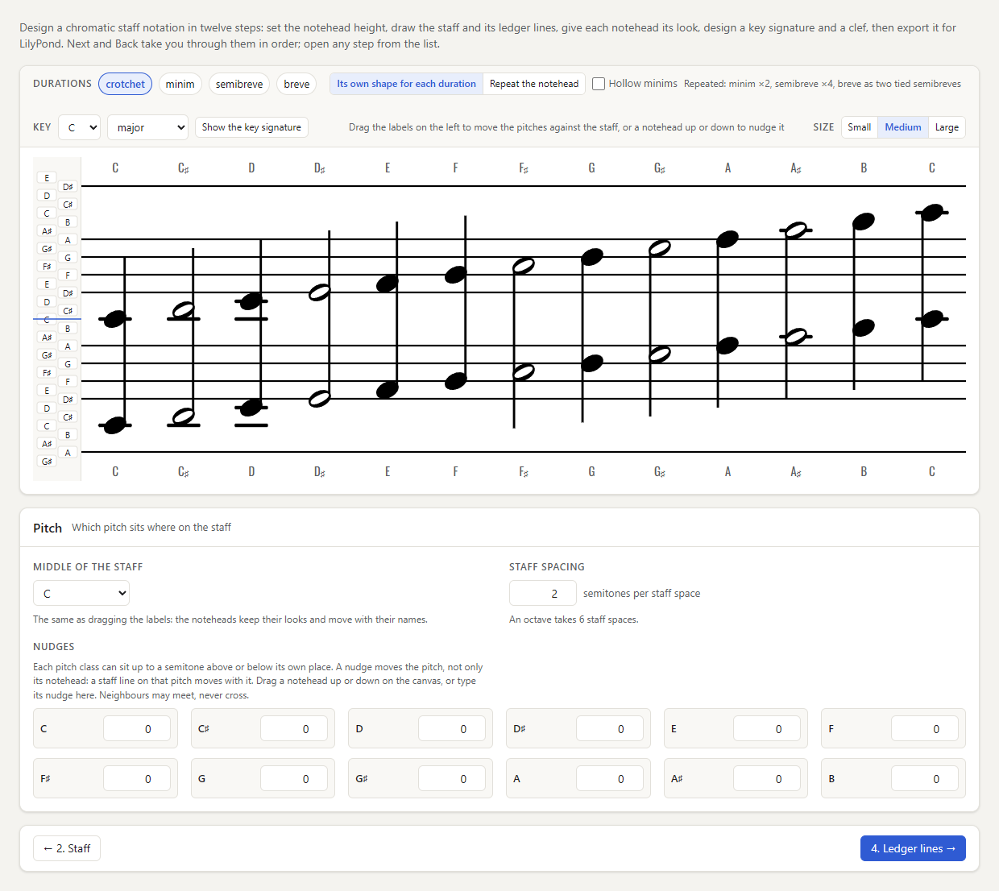
Where short lines appear for notes off the staff, or in its gaps.
Under Which ones show, click Automatic. The default's own ledger rules belong to the old staff; Automatic gives this one's: a ledger can appear wherever the staff's spacing continues past its lines, and shows when a notehead is closer to it than to any staff line. In the six-semitone gap that puts two ledgers, at B (semitone 11) and C♯ (13). A♯ and D sit in the spaces beside the staff and take none.
Why C does not sit on B's ledger. Look at B, C and C♯ together, on the right of the canvas. B sits on the B ledger and C♯ on the C♯ ledger, but C, a semitone above B, hangs below the C♯ ledger instead of sitting above B's. A ledger answers only to the notes in its own octave: the B ledger belongs to the octave that ends at B, and C begins the next octave, so C takes the C♯ ledger. This is a rule of the Configurator's ledgers, not of conventional notation.
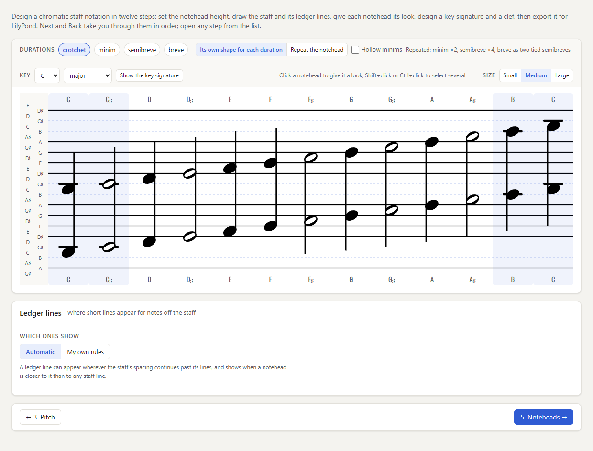
Each notehead's look: its shape, fill and colour, and how the longer durations show.
diamond.svg. The reference point picker opens on
the enlarged diamond; its middle is right, so click
Done. Pick the diamond under Shape, and
Solid under Fill (the default's sharps are hollow, and a
hollow crotchet would read as a minim once minims are hollow).#cc0000. The rest stay black.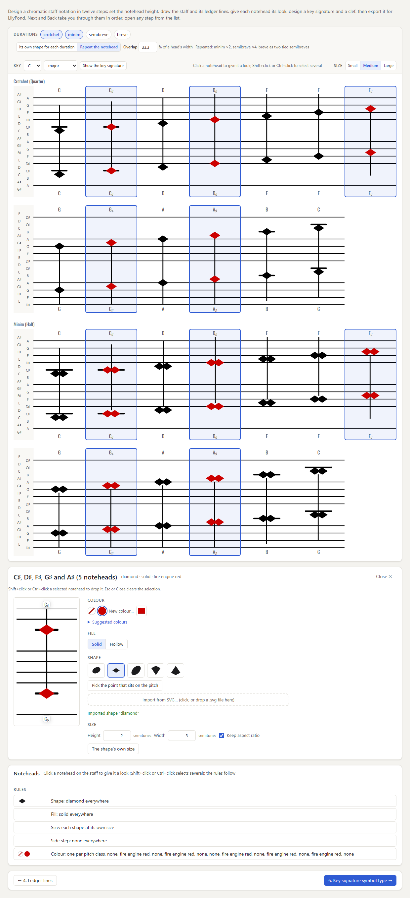
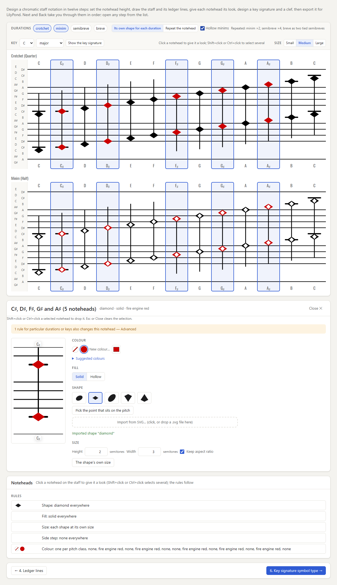
Whether the notation shows a key signature, and what its marks start from: noteheads, traditional sharps and flats, or symbols of your own.
Tick Show the key signature, then click the Noteheads card: the signature's marks are the notation's own diamonds, on the notes of the key's scale, as the staff above the cards shows. Below the cards are the 21 spelled notes, C♭ to B♯, which the optional section gives symbols of their own.
A symbol of your own for each of the 21 spelled notes, C♭ to B♯.
Skip it. With the Noteheads starting point the step is greyed in the list, and its tooltip says why: Choose Custom marks in step 6 to design your own symbols. The optional section below comes back to it.
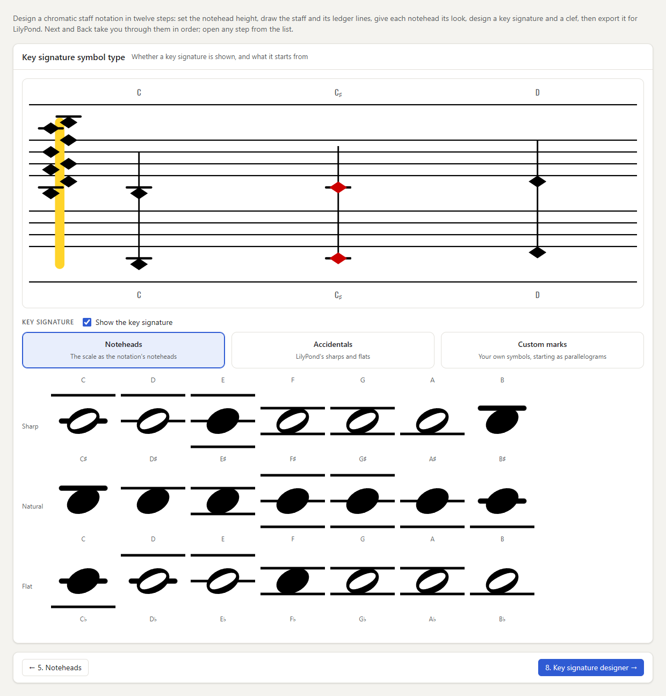
Which notes the signature shows, how they stack, the gold stem between the stacks, and where it sits on the staff.
Under Stacks, choose A new stack at each change of odd and even, and keep Gold stem between the stacks ticked. Change the key above the canvas to see the stacks follow it.
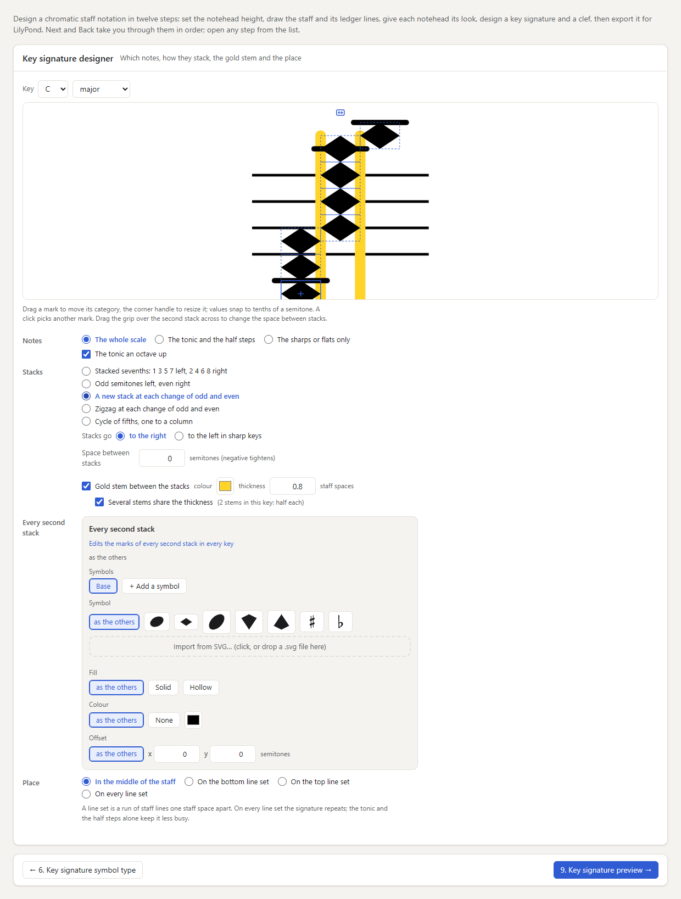
Stacked signatures after Clairnote, by Paul Morris (clairnote.org), CC BY-SA 4.0; the idea only, no code.
Every key in every mode at once, to check the design holds up in all of them, and to say which marks touch.
Look over the seven modes' fifteen keys each. In the major row, click G: the staff shows G major, and the designer opens on it. Come back to step 9 and click E♭ in the same row; the staff now shows E♭ major, as in the pictures from here on.
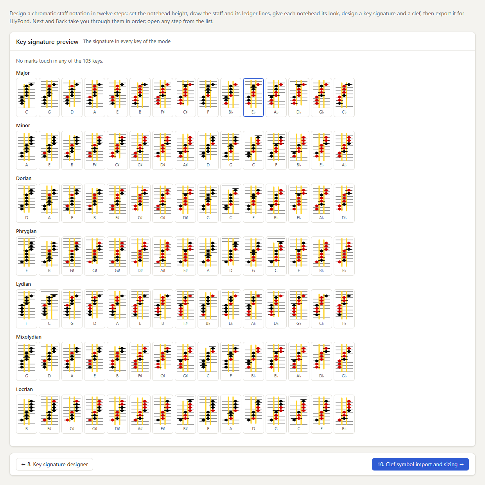
The clef at the start of the staff: one of the built-in clefs or your own, and its size.
c-clef.svg. It becomes the clef, and the anchor point
picker opens on it.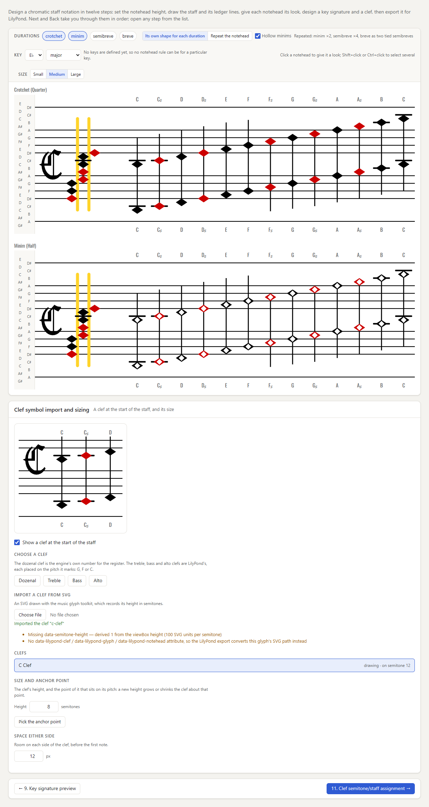
Which semitone the clef's anchor sits on.
Set Sits on semitone to 12: the anchor on middle C, the staff's C at semitone 12. You can also drag the clef on the canvas.
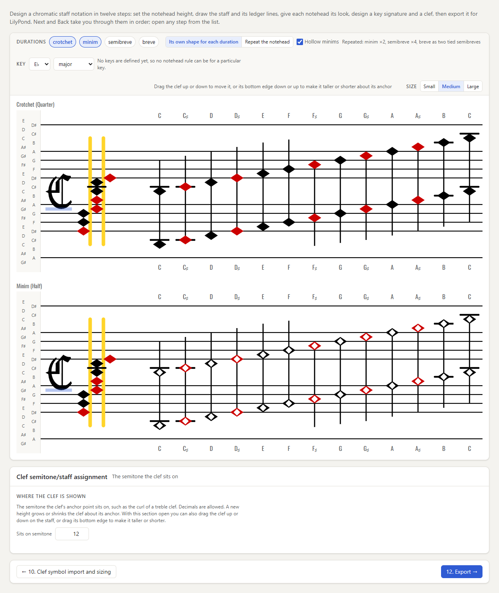
The notation's name, and the LilyPond file.
Tutorial 3-5-7-9, and File suffix to
-Tutorial3579.tutorial3579.ly, which should match
tutorial.ly apart from its date.The signature's marks need not be the noteheads. Here every one becomes a wider diamond, twice as wide as tall.
Draw it as the notehead, with one change: in step 5 of the recipe, scale
the width to 200%. Run the toolkit with the same height, 2,
and save it as diamond-wide.svg (2 semitones tall, 4 wide). Its
stems are not used: a key-signature symbol has none. Or take
diamond-wide.svg from the
downloads.
Back in step 6, click the Custom marks card and confirm: every spelled note gets the built-in parallelogram, and step 7 opens up.
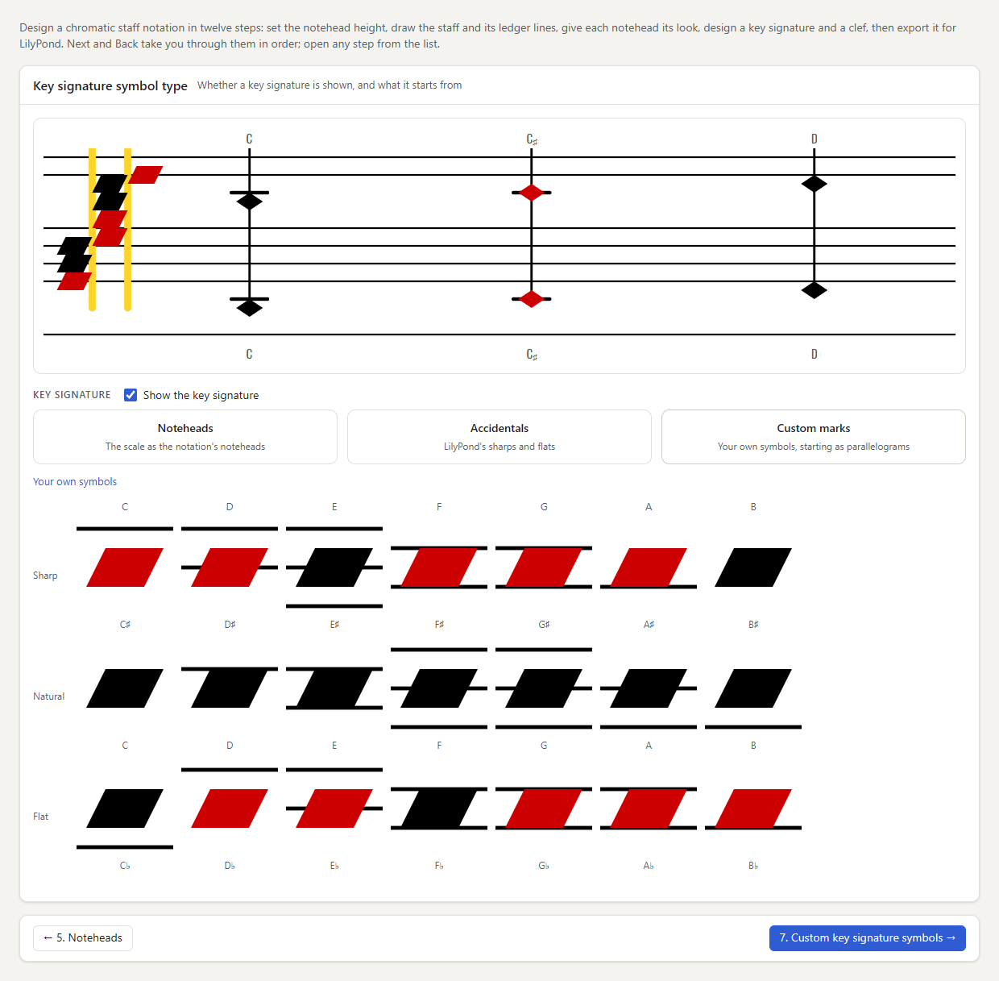
In step 7, click All in the Select row, so the card
reads 21 spelled notes selected. In the card, click Import from
SVG… and choose diamond-wide.svg, then
Done in the reference point picker. Every spelled note is
now the wide diamond, solid, in its notehead's colour.
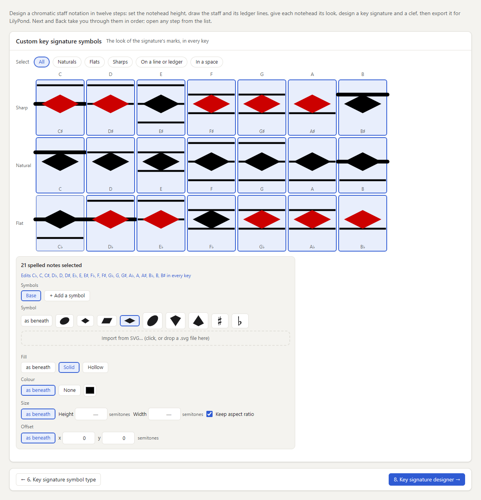
The wide diamonds push the stacks apart. Set Space between stacks to −0.5 semitones, or drag the grip over the second stack to the left.
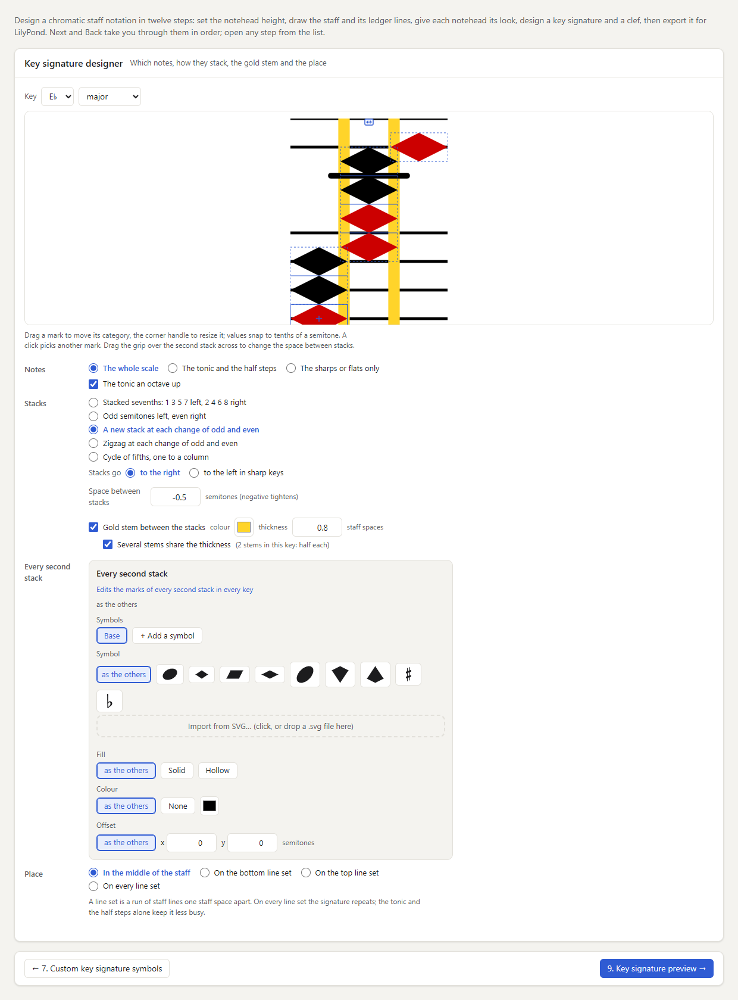
Export for LilyPond again. The signature now exports as a table of marks, one entry a key; compare it with tutorial-custom.ly.
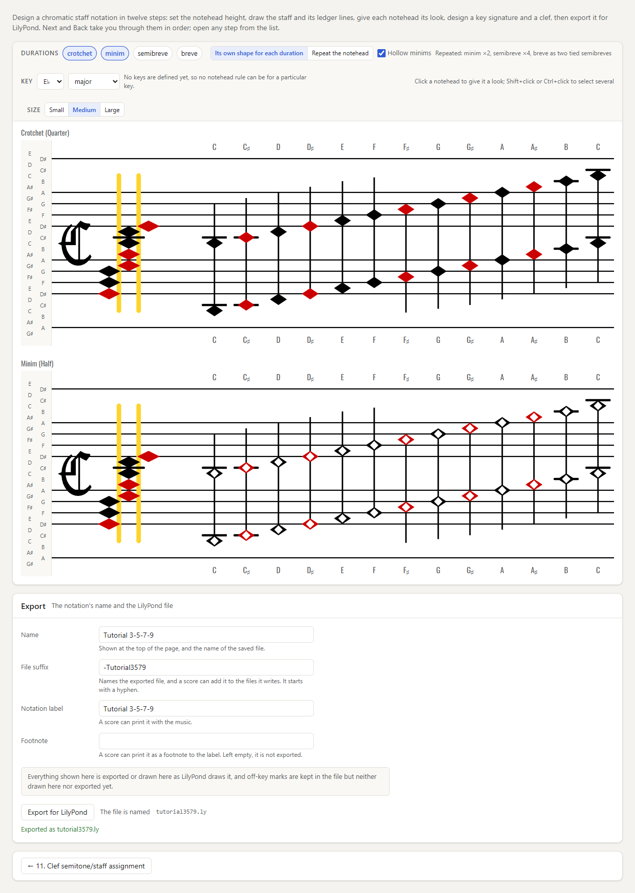
In a clone of
lilypond-chromatic-notation-base,
put tutorial3579.ly beside a score that includes it. The export
includes the engine itself, so the score needs only the one line:
\version "2.24.2"
\include "tutorial3579.ly"
\score {
\new Staff {
\key ees \major
\time 4/4
\relative c'' { ees4 f g aes | bes2 c | d4 c bes aes | g1 }
}
}
Save it as tutorial-score.ly and run
lilypond tutorial-score.ly (or
lilypond -dbackend=svg tutorial-score.ly for an SVG). The
engraving has the staff, ledger lines, diamonds, colours, key signature and
clef the canvas shows. The engine's README covers installing it and its
options.